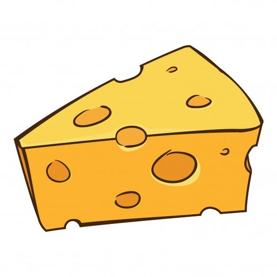

Keju adalah sebuah makanan yang dihasilkan dengan memisahkan zat-zat padat dalam susu melalui proses pengentalan atau koagulasi. Proses pengentalan ini dilakukan dengan bantuan bakteri atau enzim tertentu yang disebut rennet. Hasil dari proses tersebut nantinya akan dikeringkan, diproses, dan diawetkan dengan berbagai macam cara. Dari sebuah susu dapat diproduksi berbagai variasi produk keju. Produk-produk keju bervariasi ditentukan dari tipe susu, metode pengentalan, temperatur, metode pemotongan, pengeringan, pemanasan, juga proses pematangan keju dan pengawetan. Umumnya, hewan yang dijadikan sumber air susu adalah sapi. Air susu unta, kambing, domba, kuda, atau kerbau digunakan pada beberapa tipe keju lokal. Makanan ini dikenal di seluruh dunia, tetapi diduga pertama kali dikenal di daerah sekitar Timur Tengah. Meskipun tidak dapat dipastikan kapan keju pertama kali ditemukan, menurut legenda keju pertama kali ditemukan secara tidak sengaja oleh seorang pengembara dari Arab. Keju memiliki hampir semua kandungan nutrisi pada susu, seperti protein, vitamin, mineral, kalsium, dan fosfor namun juga lemak dan kolesterol yang dapat menyebabkan masalah kesehatan apabila dikonsumsi secara berlebihan. Besaran kandungan lemak dalam keju tergantung pada jenis susu yang digunakan. Keju yang dibuat dengan susu murni atau yang sudah ditambah dengan krim memiliki kandungan lemak, kolesterol dan kalori yang tinggi. Keju sangat bermanfaat karena kaya akan protein, terutama bagi anak kecil karena mereka membutuhkan protein yang lebih banyak dibandingkan orang dewasa.
| Ricotta | Keju lunak dari susu sapi ini berasal dari Italia. Teksturnya sangat rapuh dan kandungan lemaknya termasuk tinggi, mencapai 65 %. Kombinasi rasa yang gurih dan lezat dengan aroma harum menjadikan terasa pas dipadukan dengan aneka masakan pasta Italia seperti lasagna dan spaghetti. |
|---|---|
| Brie | Termasuk kategori soft cheese dari Prancis. Ciri khas keju ini adalah kulit luarnya berwarna putih dan bagian dalamnya lembut meleleh. Aromanya tajam dan kandungan lemaknya tinggi (45%). Brie sangat cocok dipakai sebagai bahan campuran salad, dimakan dengan buah olive maupun pickle. |
| Cream Cheese | Di pasaran, kita dapat menemukan dua macam cream cheese, double cream cheese adalah pilihan pertama dengan kandungan lemak 65% dan cream cheese dengan kandungan 45% lemak. Berbeda dengan jenis keju lainnya, cream cheese memiliki rasa yang sedikit asam. Umumnya keju ini digunakan pada hidangan penutup, misalnya chesse cake, sebagai isi pie, atau dimakan bersama potongan buah-buahan. |
| Mozzarella | Adalah keju Italia yang aslinya berasal dari susu kerbau liar. Keju lunak dengan kandungan lemak antara 40 - 50% ini sangat sepesifik sifatnya. Mozzarella akan meleleh ketika dipanggang, sangat cocok untuk toping pizza maupun campuran fritata. |
| Edam | Salah satu keju asal Belanda yang populer. Teksturnya keras dengan aroma mirip kacang. Kandungan lemak keju ini sekitar 40% dan yang membedakan dengan keju lain adalah kemasannya yang selalu terbungkus lapisan sejenis lilin berwarna merah. Edam sangat cocok untuk campuran kue kering seperti aneka kue atau taburan pada hidangan panggang. |
| Parmesan | Salah satu jenis keju keras dari kota Parma, Italia. Pada umumnya berbentuk silinder dengan warna kuning muda. Teksturnya keras, cocok untuk keju parut. Aroma parmesan cukup tajam karena proses pemeraman yang cukup lama, antara 14 bulan sampai 4 tahun. Keju ini sangat cocok untuk taburan pizza, sup, maupun olahan aneka pasta. Kandungan lemak keju sekitar 61%. |
| Cheddar | Salah satu jenis keju asal Inggris yang paling banyak dikonsumsi di seluruh dunia. Rasanya yang lezat dengan aroma tidak terlalu tajam menjadikan cheddar cocok digunakan untuk masakan apa saja. Sajian kaserol, sup, isi sandwich, dan salad terasa lebih lezat dengan penambahan keju ini. Cheddar mengandung lemak 48% dengan masa pemeraman 9- 24 bulan. |
| Emmenthal | Keju ini berasal dari Swiss, salah satu keju keras yang cukup populer. Emmenthal memiliki karakteristik berbeda dengan keju -keju lainnya, bentuknya unik karena jika dipotong akan terlihat lubang -lubang yang terbentuk selama proses fermentasi. Keju ini banyak disukai karena cita rasanya lembut dan aromanya yang kaya. Emmenthal cocok dihidangkan sebagai keju meja dengan disertai segelas anggur. |
Muffin Cakemerupakan kue berbahan dasar adonan roti yang dibentuk bulat dan diletakkan dalam mangkuk kertas mini, lalu diberi olesan selai gula dan chocochips. Muffin ternyata memiliki cara makannya sendiri lho, nantinya muffin harus disobek dulu, kemudian dioleskan ke mentega ataupun selai buah, lalu harus dipanggang lagi untuk memperkaya cita rasanya. Di Inggris, muffin terkenal sebagai kue yang dimakan saat musim dingin sebagai pendamping kamu saat minum minuman hangat, sebut saja teh. Seperti yang kalian ketahui, Inggris terkenal akan tradisi minum teh mereka yang disebut dengan afternoon tea. Dalam tradisi ini, orang orang akan menyeruput teh diselingi dengan makan muffin. Hal ini dikarenakan muffin mampu membuat tubuh hangat dan terasa kenyang karena kandungan roti didalamnya. Itulah mengapa muffin disebut juga dengan tea cakes. Tapi, yang harus kamu perhatikan yaitu muffin bukanlah jenis kue yang sama dengan cupcake. Kalau dari bahan adonan sih keduanya memang tak beda jauh. Tapi, cupcake adalah versi mini dari cake, sedangkan muffin adalah versi mini dari roti. Adonan cupcake juga diaduk lebih lama agar gelembung udara merata dalam cupcake, sedangkan muffin tidak, sehingga muffin menghasilkan tekstur yang lebih padat dan menggumpal.
| Bahan | Takaran |
|---|---|
| Telur | 2 butir |
| Vanilla Extract | 1/2 sdt | Garam | 2 cubit |
| Gula Halus | 190 gr |
| Tepung Serba Guna | 275> gr |
| Susu Bubuk | 1 sdm |
| Baking Powder | 1 sdt |
| Baking Soda | 1/2 sdt |
| Mentega Tawar Cair | 125 gr |
| Minyak Sayur | 75 gr |
| Susu Cair | 90 gr |
| Keju Chedar Potong Dadu | 100 gr |
Cheese CakeCheesecake (bahasa Indonesia: "kue keju") adalah kue yang biasanya dimakan sebagai hidangan penutup, dibuat dengan mencampurkan keju yang bertekstur lembut, telur, susu, dan gula.[1][2][3] Keju yang umumnya digunakan untuk membuat cheesecake adalah keju krim, tetapi dapat juga menggunakan keju lainnya seperti cottage cheese, ricotta, mascarpone, neufchâtel ataupun keju quark.[2][4] Cheesecake umumnya diberi hiasan buah segar, krim, dan lapisan gula.[1] Bagian dasar dari cheesecake dapat diisi dengan biskuit graham, kacang yang dihancurkan, ataupun bahan lainnya yang bertekstur rapuh.[1][5][6] Walaupun disebut cake atau bolu, cheesecake bukan merupakan sejenis kue bolu, melainkan dapat dikategorikan sebagai pai atau custard yaitu campuran telur dan susu yang dipanggang atau dimasak dengan air panas dan menjadi kental akibat proses koagulasi protein telur.[1][7][8][9] Cheesecake dapat dipanggang ataupun tidak dipanggang.[7][10] Cheesecake yang menggunakan telur umumnya dipanggang untuk mematangkan telur tersebut.[7][10] Sementara itu, gelatin digunakan untuk cheesecake yang tidak dipanggang.[7][10] Baik dipanggang maupun tidak, cheesecake harus disimpan di lemari es terlebih dahulu sebelum disajikan.
| Bahan | Takaran |
|---|---|
| Cream Cheese | 300 gr |
| Mentega | 60 gr | Susu Kental Manis | 75 gr |
| Vanilla Beans / Essence | 2 sdt |
| Jeruk Nipis | 1 sdm |
| Garam | Sesuai Selera |
| Biskuit Roma Kelapa | 30 keping |
| Mentega Cair | 75 gr |
Macaroni and CheeseMakaroni saus keju atau makaroni keju (bahasa Inggris: macaroni and cheese, dikenal juga sebagai mac and cheese di Amerika Serikat dan macaroni cheese di Britania Raya[1]) adalah hidangan pasta makaroni yang dimasak dengan saus keju, umumnya cheddar. Itu juga bisa memasukkan bahan-bahan lain, seperti remah roti atau daging.[2][3] Makaroni keju tradisional adalah kaserol yang dipanggang dalam oven; namun, dapat disiapkan dalam panci saus di atas kompor atau menggunakan campuran kemasan.[3] Keju sering kali pertama kali dimasukkan ke dalam saus Béchamel untuk membuat saus Mornay, yang kemudian ditambahkan ke pasta. Di Amerika Serikat, ini dianggap sebagai makanan rumahan.
| Bahan | Takaran |
|---|---|
| Macaroni | 400 gr |
| Cheddar Cheese | 115 gr | Gruyere Cheese | 85 gr |
| Mozzarella Cheese | 85 gr |
| Flour | 4 sdm |
| Butter | 4 sdm |
| Milk | 1L |
| Pepper | 1/4 sdt |
| Nutmeg | 1/4 sdt |